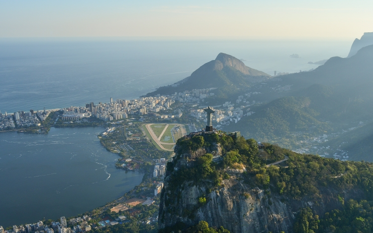
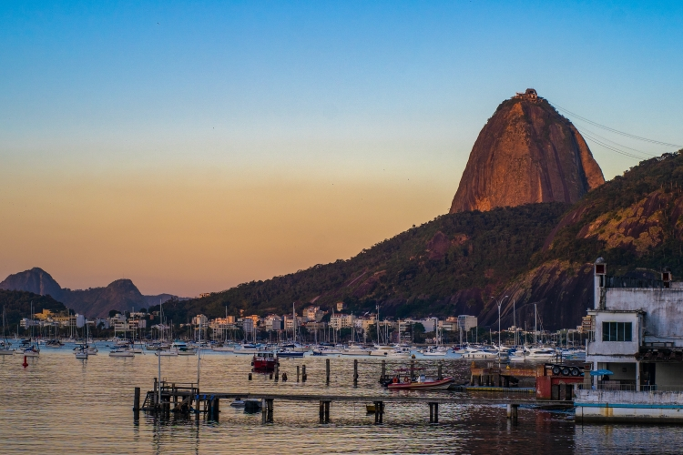

Rio De Janeiro
Resumo da Viagem
Destino: Rio de Janeiro, Brasil
Duração: 5 a 7 dias
Melhor Época: O Rio de Janeiro tem um clima tropical, portanto, é um destino atraente durante todo o ano. No entanto, evite a temporada de chuvas intensas de dezembro a março.
Atrações e Destaques
Cristo Redentor
O Cristo Redentor, uma das Sete Maravilhas do Mundo, fica no topo do Morro do Corcovado e proporciona vistas incríveis da cidade.
Pão de açúcar
Um teleférico leva os visitantes ao topo deste morro, proporcionando vistas panorâmicas da cidade e da Baía de Guanabara.
Copacabana e Ipanema
Duas das praias mais famosas do mundo, com areias douradas, águas azuis e uma cena de praia vibrante.
- 
- 

Rio Grande do Sul
Resumo da Viagem
Destino: Rio Grande do Sul, Brasil
Duração: 5 a 7 dias
Melhor Época: O Rio Grande do Sul tem um clima subtropical, com invernos frios e verões quentes. A melhor época para visitar é durante a primavera e o outono, quando o clima é mais ameno.
Atrações e Destaques
Gramado
Gramado é uma encantadora cidade serrana conhecida por sua arquitetura europeia, belos jardins e festivais de inverno. É um destino popular durante todo o ano.
Canyons de Cambará do Sul
Os Canyons de Cambará do Sul oferecem paisagens deslumbrantes com formações rochosas impressionantes e trilhas para os amantes da natureza.
Porto Alegre e Praias
Porto Alegre, a capital do estado, é uma cidade vibrante com uma cena cultural rica. Além disso, o Rio Grande do Sul possui praias ao longo da costa, como Torres, que oferecem belezas naturais únicas.


Santa Catarina
Resumo da Viagem
Destino: Santa Catarina, Brasil
Duração: 5 a 7 dias
Melhor Época: Santa Catarina possui um clima variado, com praias atraentes durante o verão e regiões montanhosas encantadoras no inverno. A melhor época para visitar depende da sua preferência, mas a primavera e o verão são populares para aproveitar as praias.
Atrações e Destaques
Florianópolis
Florianópolis é a capital de Santa Catarina e é conhecida por suas belas praias, como a Praia da Joaquina e a Lagoa da Conceição, além de sua cultura diversificada.
Serra Catarinense
A região da Serra Catarinense oferece paisagens deslumbrantes, trilhas em meio à natureza e a oportunidade de experimentar o clima frio do inverno com a possibilidade de neve em alguns anos.
Balneário Camboriú
Balneário Camboriú é uma cidade costeira com praias, arranha-céus e uma vida noturna agitada, tornando-se um destino popular para os amantes da praia.